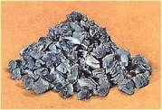
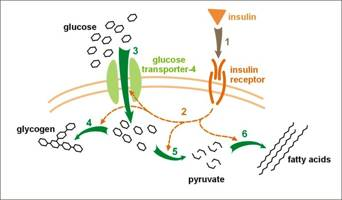

| METALS IN MEDICINE AND THE ENVIRONMENT | |||
| Metals | Vanadium in Biology and Medicine | ||
|
Overview Vanadium is a trace element that is believed to have a biological significance. The role that vanadium plays in biological systems is still being investigated. The element was first discovered in 1813 by mineralogist Del Rio. Del Rio was convinced that it was an isotope of chromium (1). The element was then rediscovered in 1831 by Sefström. The name vanadium comes from vanadis, a nickname for the Germanic goddess of beauty (1, 2).  Vanadium is primarily used as an alloy in the steel industry. Eighty percent of vanadium is used as ferrovanadium (FeV), a strenghthening agent. Ferrovandium is prepared by reacting crude iron with vanadium pentaoxide. Vanadium pentoxide is also used in the making of ceramic and glass. A significant chemical application of vanadium is the use of vanadium pentoxide as a catalyst in the production of sulfuric acid (4). Role in Biology Very little is known about the biological function of vanadium. It is most commonly found in the +4 and +5 oxidation state in the form of vanadyl (VO2+) and vanadate (VO3-), respectively. Various oxyanions and cations act as oxidizing agents (5). Humans usually consume 10-60 μg of vanadium through foods daily. The human body is estimated to contain 50-200 μg of vanadium. In each organ, vanadium is present at very low concentrations, 0.01-1 μg, and is thought to play a role in a wide variety of physiological processes. In tissues, approximately 90% of vanadium is bound with proteins and 10% is present in the ionic form. The importance of vanadium pertaining to the growth of rats and chicks has been determined, but this has not been established in humans. A few living systems contain vanadium. Examples of such systems are species of ascidian, where the presence of a vanadium-binding protein is presumed; amanita as a species of mushroom contains a purple-blue vanadyl complex, amavadin; few species of brown algae contain a metalloenzyme, bromoperoxidase, in the vanadate form; and some species of polychaete form (2). Treatment of Diabetes Diabetes mellitus (DM) can be classified in two different types. Type 1 is insulin-dependent and type 2 is noninsulin-dependent. Type 1 diabetes is caused by the destruction of beta cells. These cells are responsible for the production of insulin, a hormone that regulates blood glucose levels. Type 2 diabetes is caused by a variety of factors such as aging and obesity. When DM develops many severe secondary complications, including atherosclerosis (a disease resulting in loss of elasticity), microangiopathy (disorders of the blood capillary), renal dysfunction and failure, cardiac abnormalities, diabetic retinopathy (defect of the retina), and ocular disorders that often result in blindness can occur. The treatment of type 1 and type 2 DM are by injection of insulin and synthetic therapeutic drugs, respectively. Unfortunately, these methods of treatment have some faults. Frequent injections of insulin are painful and increase patient stress, especially in young people, and synthetic therapeutics often have side effects (6, 7). Figure 2 illustrates the steps, 1-7, that insulin triggers in the cell. When insulin binds to the receptor, cell signals activate the glucose transporter causing an influx of glucose, followed by synthesis of glucagon, glycolysis, and fatty acid synthesis.  Medicinal inorganic chemistry is a relatively recent field. With the discovery of the platinum-containing anti-cancer drug, cisplatin, as well as the use of gold in the rheumatoid arthritis drug, auranofin, other micronutrients are now being investigated. The initial use of vanadium to treat diabetes was in 1899 (6). Lyonnet, et al. tested the ability of sodium vanadate (NaVO3) to lower blood glucose levels in their patients. The compound was administered to their 60 patients, three of whom had diabetes. Of those three, two of them had slight lowering of sugar levels, and no side effects were noted in any patient (7). More than 100 years later, vanadium is no closer to becoming an approved treatment for diabetes. The discovery of insulin in 1922 took the focus off of vanadium complexes for treatment of diabetes, as hormone supplements became the major treatment for the disease (6, 8). Vanadyl sulfate (VOSO4) soon replaced sodium vanadate in animal testing due to the decreased toxicity of vanadyl compared to vanadate (6-10 times less toxic (1)). Also, much of the vanadate administered is found in the vanadyl form (6).
Many studies have shown that the complexes of vanadium lower glucose levels both in vitro and in vivo. Zhang, et al. treated STZ rats with 15 mg/mL sodium vanadate (V) or an herbal decoction of sodium vanadate (HV) with S. Bunge, a plant herb native to China, in their drinking water. There were also a diabetes control group who did not receive treatment (D) and a nondiabetic control (C). The effects are shown in Figure 4. Both vanadium treated groups showed a lower blood glucose level over the test period. Twenty-five percent of the V group rats died due to hypoglycemia or diarrhea. None of the HV rats died. The authors speculate that the antioxidants of the herb reduced metal toxicity. Figure 5 illustrates the post-study vanadium accumulation of various organs in the rats. The V group rats had high accumulation of vanadium while the HV group had a much lower accumulation. Again, this was claimed as an effect of the herbal antioxidants (11). Zhang illustrated that it is possible to lower the toxic effects of vanadate with herbal supplements.
Figure 6. The effect of vanadyl on macrophage (Mø) NO production in normal and diabetic cells. (6)
Figure 7. Proposed vanadium mechanisms in the body. (8) Toxicity Vanadium accumulates in bone and kidney tissue. The similarity to phosphate makes it easily stored in bone. The long term effects of accumulated vanadium are unknown and under investigation (11). Gastrointestinal side effects and weight loss occurred in several studies (7, 11). The carcinogenic effects of vanadium have not been investigated fully. Developmental and reproductive side effects of vanadium are also known (11). In order to move forward and develop a potential pharmaceutical for the treatment of diabetes, more studies must be completed to find answers to the unanswered questions regarding toxicity and the mechanism of action. Image Sources Vanadium metal
(1) Poucheret, P., Verma, S., Grynpas, M. D., and McNeill, J. H. Vanadium and diabetes. Mol. and Cellular Biochem. 188:73-80 (1998). (2) Sakurai, H., Fujisawa, Y., Fujimoto, S., et al. Role of vanadium in treating diabetes. J. of Trace Elements in Exp. Med. 12:393-401 (1999). (3) U.S. Geological Survey. Mineral Commodity Summaries – Vanadium. January 2008. Accessed September 30, 2008. (4) Mineral Information Institute. Vanadium. Accessed September 30, 2008. (5) Selinus, O., editior. Essentials of medical geology: Impacts of the natural environment on public health. Elsevier Inc., Burlington, MA. (2005). (6) Sakurai, H. A new concept: The use of vanadium complexes in the treatment of diabetes mellitus. The Chemical Record. 2:237-248 (2002). (7) Srivastava, A. K., Mehdi, M. Z. Insulino-mimetic and anti-diabetic effects of vanadium compounds. Diabetic Medicine. 22:2-13 (2004). (8) Thompson, K. H., and Orvig, C. Vanadium in diabetes: 100 years from phase 0 to phase 1. J. of Inorg. Biochem. 100:1925-1935 (2006). (9) Verma, S., Cam, M. C., McNeill, J. H. Nutritional factors that can favorably influence the glucose/insulin system: Vanadium. J. of the Amer. College of Nutrition. 17(1):11-18 (1998). (10) Peters, K. G., Davis, M. G., Howard, B. W., et al. Mechanism of insulin sensitization by BMOV (bis maltolato oxo vanadium); unliganded vanadium (VO4) as the active component. J. of Inorg. Biochem. 96:321-330 (2003). (11) Zhang, L., Zhang, Y., Xia, Q., et al. Effective control of blood glucose status and toxicity in streptozotocin-induced diabetic rats by orally administration of vanadate in an herbal decoction. Food and Chemical Toxicology. 46:2996-3002 (2008). Author: Joseph Houck
|
|||
| Topics | |||
|
|||
{kind=link}